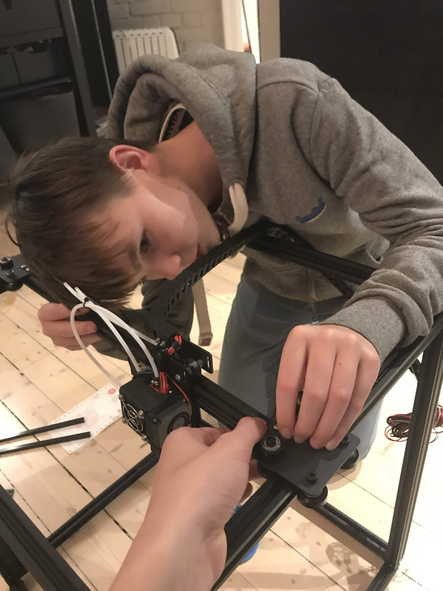

3D printer v2
The second kit printer. Bigger frame, better extruder, auto-bed-levelling. Luxuries the first printer could only dream of. Built with a friend over an evening, then re-tuned more times than I want to admit.

What was new
- Auto-bed-levelling. The single most life-changing upgrade over the first printer. The biggest source of failed prints, gone.
- Larger build volume. The difference between "what fits in this box" and "what shape do you want".
- Better mechanical tolerances. Stiffer frame, beefier rails. Less mechanical noise in the gcode-to-print path.
- Still no built-in slicer; still a lot of host-side configuration before a given filament behaved.
The tuning ritual
I printed the same benchmark boat (the benchy) dozens of times, each with one variable changed. The picture I keep of the row of slightly-different benchies is the most honest summary of what the printer actually was: a slow, beautiful, physical training loop. Tune. Print. Inspect. Tune again. It is the same loop as machine learning, only the data points smell like burnt PLA.